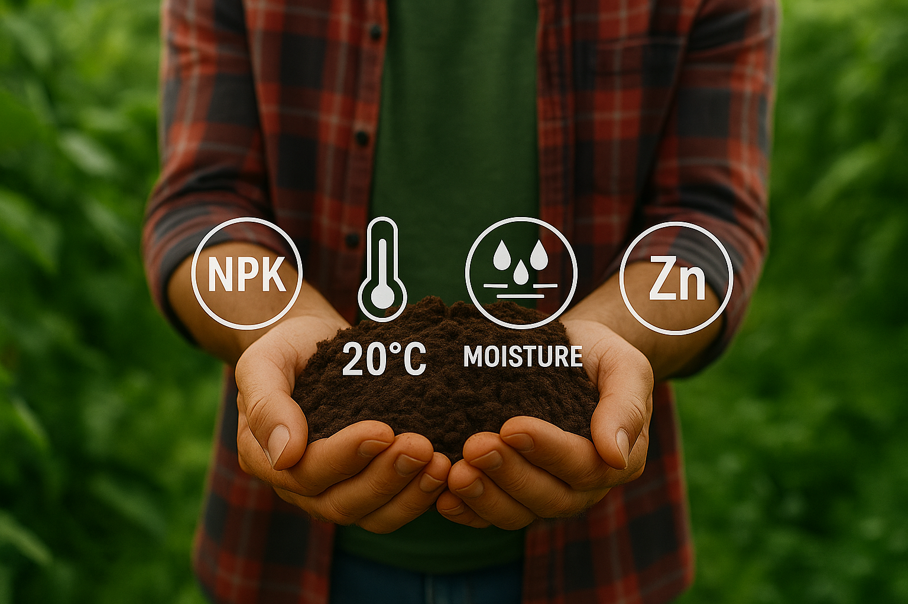

WELCOME,
FARMER!
Grow smarter, not harder — our IoT-powered soil system tracks your field’s health live and helps you make data-driven farming decisions.

Grow smarter, not harder — our IoT-powered soil system tracks your field’s health live and helps you make data-driven farming decisions.
Overall Analysis of Soil Condition
Real-time tracking of moisture, temperature, zinc, and NPK levels with smart sensors for accurate soil insights.
Unlock smarter farming through AI-driven analytics. The system compares current and historical data trends.
Get AI-powered suggestions to improve soil quality — from irrigation to fertilization — tailored to your farm’s needs.
Instant notifications sent to farmers’ devices when critical thresholds are reached — ensuring timely action for optimal soil care.